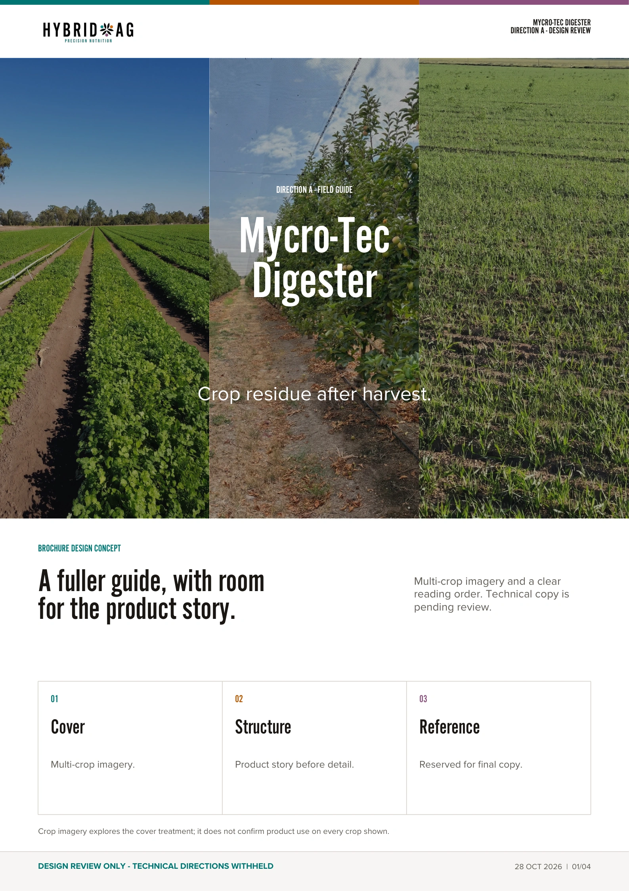
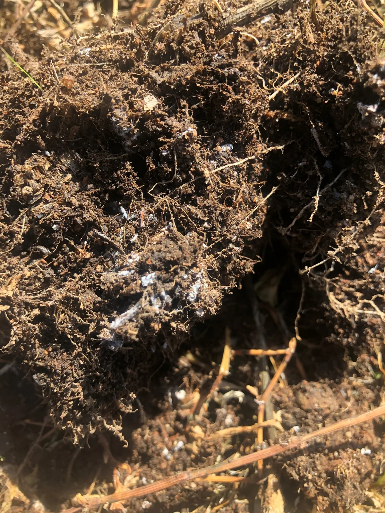
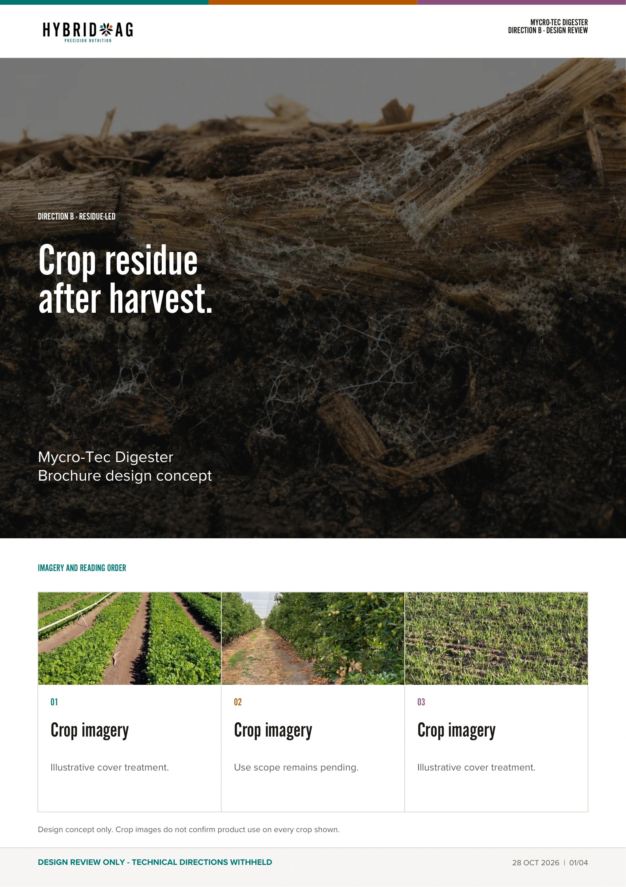
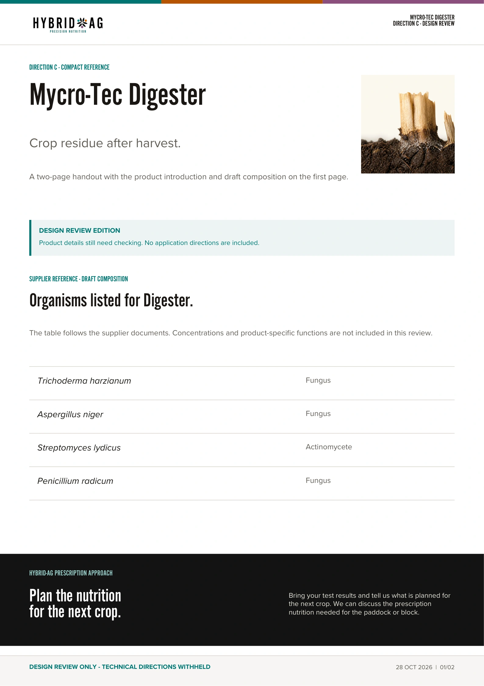

Open brochureDirection A · 4 pages
Field guide
A four-page brochure with several crops on the cover and more space to explain the product.
Download review PDFDigester is a microbial liquid being reviewed for crop residue after harvest. Residue management is considered alongside the soil and Nutrient requirements of the next crop.
For crop residue after harvest.
After harvest, the type and amount of residue, available moisture and time before the next crop help determine the approach. Digester contains organisms described in the supplier material as decomposers.
We can discuss the crop and conditions with you to help work out whether Digester is suitable. Testing and any prescription nutrition required remain part of that discussion.
Pack sizes, product code and pricing are awaiting confirmation. Ordering is not enabled for this review.
Website and brochure concept review. Application directions are withheld while technical details are confirmed.
Soil testing helps establish the Nutrient requirement for the following crop. Hybrid-Ag uses those results to plan prescription blends for the farm, taking account of what can be applied and what needs attention.
Residue left after harvest raises a separate question. The role being reviewed for Digester is its use on that residue.
The crop and residue conditions need to be understood before a recommendation is made. Crop-specific suitability and application directions remain part of the technical review.

The supplier material lists three fungi and an actinomycete. Their names are included here as a reference for the product review.
The final technical specification and supporting product documents still need confirmation before this becomes a finished product page.
| Organism | Type |
|---|---|
| Trichoderma harzianum | Fungus |
| Aspergillus niger | Fungus |
| Streptomyces lydicus | Actinomycete |
| Penicillium radicum | Fungus |
Concentrations and use directions are withheld from this review.
Tell the team what crop has been harvested, how much residue is present and when the next crop is planned. The intended application method and available moisture are part of that discussion.
The brochure options below are design review editions. They do not provide application directions. Check the current product label and Safety Data Sheet with the team before use.
Rates, crop-specific use and application directions are withheld while the technical source documents are reconciled. No rate is selected or inferred for this page.
Preparation and mixing instructions will be added after technical review. No product substitution or compatibility is implied by these concepts.
Storage and handling instructions are withheld pending confirmation of the current label and safety documents.
Compare the three brochure layouts from the Biology dashboard. These are design reviews, with application directions withheld while the product details are checked. Open a brochure to read it, or download the PDF.
These three Digester brochures give us something concrete to review before we settle on a format for future Hybrid-Ag product brochures.
We’ve started with Digester because we resell it and already have the supplier documents and responses to work from. Once we agree on a format, we can use it for SP and Lockout, then our own products.

Open brochureA four-page brochure with several crops on the cover and more space to explain the product.
Download review PDF
Open brochureA four-page brochure that starts with crop residue and the conditions to discuss before a recommendation.
Download review PDF
Open brochureA two-page handout with the product introduction and draft composition together on the first page.
Download review PDFWhich layout is easiest to read and would be most useful in a grower conversation? We can use the cover from one and the inside pages from another, then finish the wording and technical checks.
These review editions use the 15 October layouts. Application directions and unconfirmed technical details have been left out. The dashboard brochures are kept separately.
A preferred layout is the starting point for the next draft. Rates, crop suitability, mixing, storage and the current safety documents still need technical confirmation before a finished brochure or product page is released.
Digester is manufactured by Great Southern Biology and supplied through Hybrid-Ag. This page draws on the supplier material and the internal brochure review.
Pack sizes, product code and pricing are awaiting confirmation. Ordering is not enabled in this review.
Bring the soil results you already have and tell us what is planned for the paddock or block.